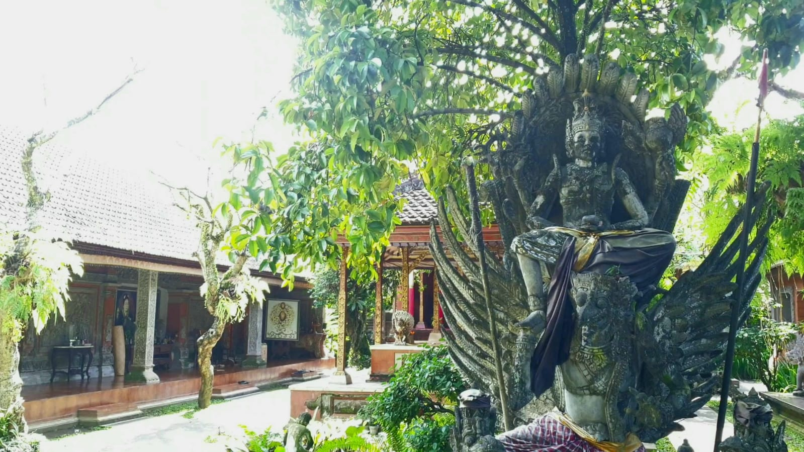

Saren Raja Dani

Saren Raja Dani, merupakan kediaman utama bagi raja atau pengelingsir Puri Ageng Blahbatuh di masa lampau, dengan bangunan utamanya adalah Balai atau Gedong Gunung Rate Saren Baler. Namun, setelah raja terakhir wafat pada tahun 1962, tempat ini tidak lagi difungsikan sebagai tempat tinggal, melainkan disakralkan sebagai area suci untuk menyimpan benda-benda pusaka..
Sebagai area yang disakralkan, Saren Rajadani harus selalu steril dari segala bentuk kekotoran, sehingga anggota keluarga yang sedang dalam kondisi "kotor kain" (halangan) tidak diizinkan berada di sini, dan di area ini juga tidak terdapat balai untuk jenazah demi menjaga kesuciannya. Di dalamnya terdapat Balai Tengah, sebuah paviliun serbaguna yang digunakan untuk berbagai upacara penting dalam siklus hidup seperti upacara kehamilan, tiga bulanan anak, hingga potong gigi.
Secara arsitektur, bangunan di dalam puri ini, termasuk di Saren Rajadani, memiliki ukuran yang lebih besar dibandingkan rumah Bali pada umumnya karena menggunakan sistem ukuran "sikut" yang berbeda. Secara keseluruhan, Saren Rajadani adalah jantung dari Puri Ageng Blahbatuh yang berfungsi tidak hanya sebagai kediaman raja, tetapi juga sebagai pusat spiritual dan pelestarian warisan budaya puri.